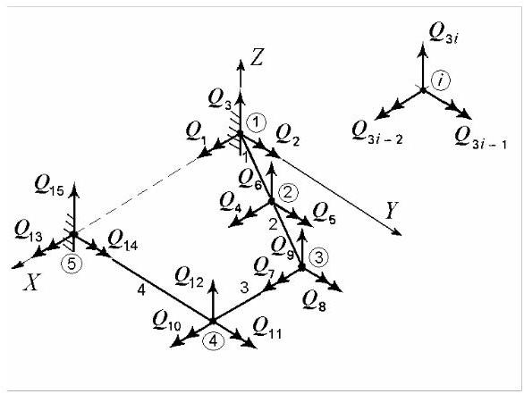
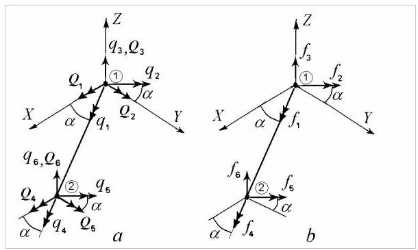
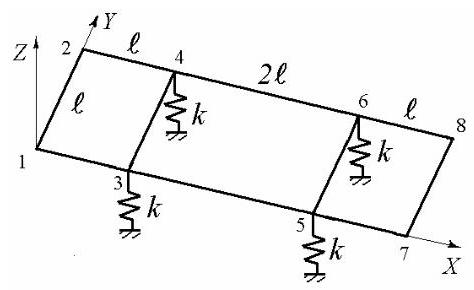
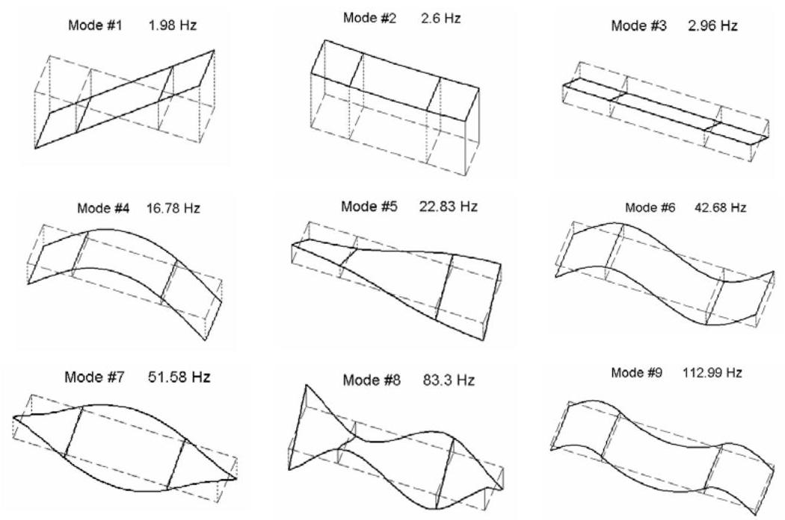
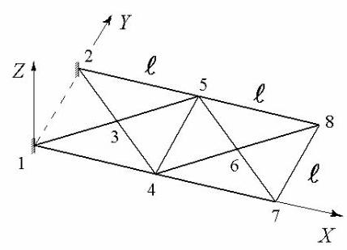
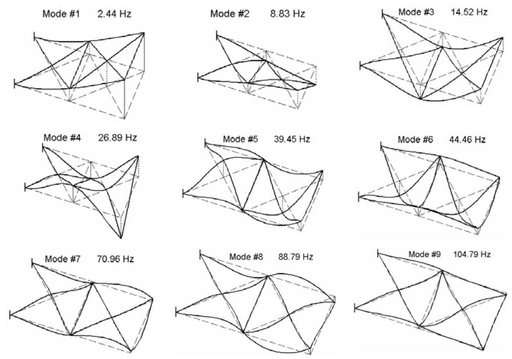
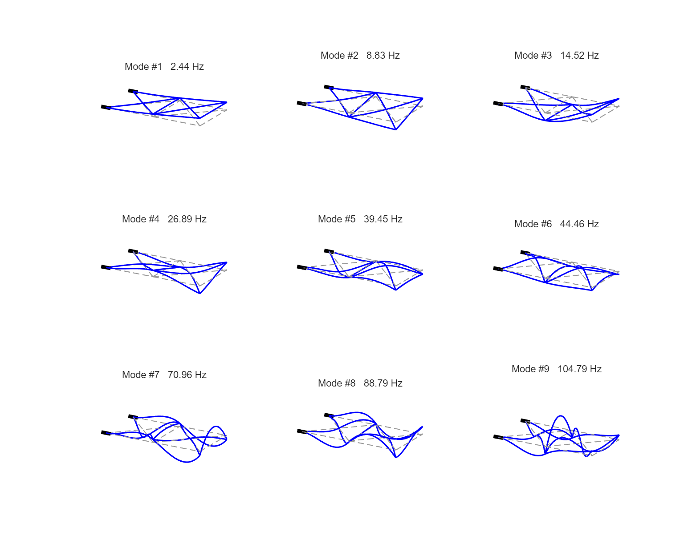

第28篇
5.4 格栅结构
格栅或格栅结构是承受垂直于平面荷载的平面结构体系。它们是三维框架的特例，其中每个节点仅有三个节点位移:一个平移和两个转动，分别描述弯曲和扭转效应。

图5.31
5.4.1 有限元离散化
如图5.31所示，格栅被划分为单元。每个节点具有三个自由度:两个转动和一个线位移。通常，节点\(i\)的自由度为\({Q}_{{3i} - 2},{Q}_{{3i} - 1}\)和\({Q}_{3i}\)，分别定义为绕\(X\)轴的转动、绕\(Y\)轴的转动以及沿\(Z\)轴的位移。
节点通过其在全局参考系\({XOY}\)中的坐标定位，单元连接由端节点索引定义。单元被建模为具有弯曲和扭转柔度的均匀杆件，不考虑剪切变形，且端部之间无荷载。其属性包括抗弯刚度\({EI}\)、抗扭刚度\(G{I}_{t}\)、单位长度质量\({\rho A}\)和长度\(\ell\)。仅考虑剪切中心与质心重合的截面。
5.4.2 局部坐标系中的单元刚度矩阵与质量矩阵
考虑如图5.32所示的倾斜格栅单元\(a\)，图中亦给出了节点位移。

图5.32
在局部物理坐标系中，沿梁方向的\(x\)轴与全局\(X\)轴成\(\alpha\)角。局部坐标系的\(z\)轴与全局系统的\(Z\)轴共线。亦可采用内禀(自然)坐标系。
单元节点位移向量为
相应的单元节点力向量可写为
在(5.113)中，\({f}_{3}\)和\({f}_{6}\)为横向力，而\({f}_{2}\)和\({f}_{5}\)为产生弯曲的力偶(图5.32, b)。相应的位移\({q}_{3},{q}_{6}\)为平移，\({q}_{2},{q}_{5}\)为转动。它们的列向量由抗弯刚度矩阵关联。
重新排列矩阵(5.89)可得
同样，上述节点力与相应节点加速度由质量矩阵关联。重新排列矩阵(5.95)可写为
轴向节点力\({f}_{1},{f}_{4}\)为扭矩，节点位移\({q}_{1},{q}_{4}\)为扭转角。它们描述扭转效应，其作用与弯曲解耦。相应的刚度矩阵和质量矩阵可分别计算。这些矩阵的推导与框架单元或桁架单元中轴向效应的刚度矩阵和质量矩阵的推导基本相同。
扭转角可用形函数(5.24)表示为
将其代入应变能\({U}_{e} = \frac{G{I}_{te}}{2}{\int }_{e}{\left( \frac{\partial \theta }{\partial x}\right) }^{2}\mathrm{\;d}x\)后得到，在
坐标变换，刚度矩阵\(\left\lbrack {k}_{t}^{e}\right\rbrack = \frac{{2G}{I}_{te}}{{\ell }_{e}}{\int }_{-1}^{+1}{\left\lfloor {N}_{r}^{\prime }\right\rfloor }^{T}\left\lfloor {N}_{r}^{\prime }\right\rfloor \mathrm{d}r\)。
因此，根据这一类比，节点力与节点位移之间的关系由以下方程给出
扭转效应的刚度矩阵为
在(5.117)中，\(G\)为剪切弹性模量(shear modulus of elasticity)，\({I}_{te}\)为截面扭转常数(torsional constant of the cross section)。对于轴对称截面，后者即为极惯性矩(polar second moment of area)。
同样，由扭转引起的单元一致质量矩阵为
对于网格单元，将方程(5.114)和(5.117)中的刚度矩阵组合，我们得到局部坐标系下的刚度矩阵，该矩阵关联节点力(5.113)与节点位移(5.112)
其中\(a = G{I}_{te}{\ell }_{e}^{2}/E{I}_{e}\)。
将方程(5.115)和(5.118)中的质量矩阵组合，我们得到局部坐标系下网格单元的一致质量矩阵(consistent mass matrix)
其中\(b = {70}{I}_{te}/{A}_{e}\)。
5.4.3 坐标变换(Coordinate Transformation)
在将矩阵(5.119)和(5.120)组装成完整网格的对应矩阵之前，必须将其从局部坐标系转换到全局坐标系。如前所述，局部坐标系的\(z\)方向与全局坐标系的\(Z\)方向重合，因此仅需转换位移的旋转分量。坐标变换由方程(5.104)定义
其中\(\left\{ {q}^{e}\right\}\)为局部坐标系中的单元位移向量(5.112)，
是全局坐标系(图5.32)中的单元位移向量，
其中\(c = \cos \alpha\)和\(s = \sin \alpha\)为局部坐标到全局坐标的转换矩阵(local-to-global coordinate transformation matrix) (5.105)。同一转换矩阵(5.122)也用于将节点力从局部坐标转换到全局坐标。
5.4.4 全局坐标系中的单元刚度矩阵与质量矩阵
采用与\(\$ {5.2.4}\)和\(\$ {5.4.5}\)相同的步骤，我们得到网格单元在全局坐标系中的刚度矩阵和质量矩阵为
以及
它们用于组装未缩减的全局刚度矩阵和质量矩阵\(\left\lbrack \bar{K}\right\rbrack\)和\(\left\lbrack \bar{M}\right\rbrack\)，组装时利用单元连接矩阵\(\left\lbrack {\widetilde{T}}^{e}\right\rbrack\)，该矩阵通过形如(5.108)的方程将单元级节点位移与完整结构级节点位移关联起来。
对于接地系统，未缩减矩阵\(\left\lbrack \bar{K}\right\rbrack\)和\(\left\lbrack \bar{M}\right\rbrack\)随后通过边界条件进行凝聚。集中质量与弹簧的影响可通过在相应矩阵主对角线的适当位置直接叠加其数值来计入。
例 5.12
计算图5.33所示平面网格的前9阶固有频率与振型，该网格由四个刚度均为\(k = {1000}\mathrm{\;N}/\mathrm{m}\)的弹簧支承。系统参数为\(E = {210}\mathrm{{GPa}}, G = {81}\mathrm{{GPa}},\rho = {7900}\mathrm{\;{kg}}/{\mathrm{m}}^{3},\ell = {0.5}\mathrm{\;m}\)，所有梁的直径均为\(d = {20}\mathrm{\;{mm}}\)。

图 5.33
解:该网格用10个单元和8个节点建模，共24个自由度。计算得到的振型与相应固有频率的近似值一并示于图5.34。

图 5.34
前三阶振型为“刚体”模态，表现为未变形网格在悬挂弹簧上的摇摆与弹跳。第4阶模态称为“第一阶弯曲”(两条横向节线)，第5阶为“第一阶扭转”(一条纵向节线)，第6阶为“第二阶弯曲”(三条横向节线)，第7阶为“第二阶扭转”，\(\delta\)为“第三阶扭转”，\(\vartheta\)为“第三阶弯曲”(四条横向节线)。
例 5.13
图5.35所示网格在点1和点2处固定，且\(\ell = 1\mathrm{\;m}\)、\(I = {0.785} \cdot {10}^{-8}{\mathrm{\;m}}^{4},\;{I}_{t} = {1.57} \cdot {10}^{-8}{\mathrm{\;m}}^{4},\;A = {3.14} \cdot {10}^{-4}{\mathrm{\;m}}^{2},\;\rho = {7900}\mathrm{\;{kg}}/{\mathrm{m}}^{3},\)、\(E = {210}\mathrm{{GPa}}\)和\(G = {81}\mathrm{{GPa}}\)。计算其前9阶固有频率与振型。

图 5.35
解:该网格用14个单元和8个节点建模，共18个自由度。计算得到的振型与相应固有频率的近似值一并示于图5.36。

图5.36
模态1为“一阶弯曲”，模态2为“一阶扭转”，模态3为“二阶弯曲”，模态4为“二阶扭转”，模态5为“三阶弯曲”，模态6则是一种沿纵轴的“一阶弯曲”。
Matlab Demo

% MATLAB 代码：计算例5.13格栅结构的固有频率与振型
%% 1. 初始化
clear;
clc;
close all;
fprintf('开始计算例5.13：平面格栅结构动力学分析 (完整最终版)...\n\n');
%% 2. 定义系统参数 (SI 单位)
E = 210e9; % 弹性模量 (Pa)
G = 81e9; % 剪切模量 (Pa)
rho = 7900; % 密度 (kg/m^3)
L_unit = 1.0; % 单元特征长度 l (m)
%% 3. 计算截面属性 (用户确认)
A = 3.14e-4; % 截面面积 (m^2)
I = 0.785e-8; % 截面惯性矩 (m^4)
It = 1.57e-8; % 截面扭转常数 (极惯性矩) (m^4)
fprintf('--- 系统与截面参数 ---\n');
fprintf('E = %.0f GPa, G = %.0f GPa, rho = %.0f kg/m^3\n', E/1e9, G/1e9, rho);
fprintf('A = %.2e m^2, I = %.3e m^4, It = %.3e m^4\n\n', A, I, It);
%% 4. 定义有限元模型 (最终精确模型)
% 节点坐标 (8个)
nodes_XY = [
0, 0; % 节点 1 (索引 1)
0, L_unit; % 节点 2 (索引 2)
L_unit/2, L_unit/2; % 节点 3 (索引 3)
L_unit, 0; % 节点 4 (索引 4)
L_unit, L_unit; % 节点 5 (索引 5)
3*L_unit/2, L_unit/2; % 节点 6 (索引 6)
2*L_unit, 0; % 节点 7 (索引 7)
2*L_unit, L_unit % 节点 8 (索引 8)
];
% 单元连接关系 (14个), 根据您的精确描述修正
elements = [
% 纵向杆件 (4个)
1, 4; % 1-4
4, 7; % 4-7
2, 5; % 2-5
5, 8; % 5-8
% 横向杆件 (2个)
4, 5; % 4-5
7, 8; % 7-8
% 左侧"米"字形辐条 (4个)
1, 3; % 1-3
2, 3; % 2-3
4, 3; % 4-3
5, 3; % 5-3
% 右侧"米"字形辐条 (4个)
4, 6; % 4-6
5, 6; % 5-6
7, 6; % 7-6
8, 6 % 8-6
];
num_nodes = size(nodes_XY, 1);
num_elements = size(elements, 1);
total_dofs = num_nodes * 3; % 每个节点3个自由度 (Rx, Ry, Z)
fprintf('--- 有限元模型 ---\n');
fprintf('模型类型: 最终精确版8节点平面格栅\n');
fprintf('总节点数: %d\n', num_nodes);
fprintf('总单元数: %d (与书中描述一致)\n\n', num_elements);
%% 5. 组装全局刚度矩阵 [K] 和质量矩阵 [M]
K_global = zeros(total_dofs);
M_global = zeros(total_dofs);
for i = 1:num_elements
node1_idx = elements(i, 1); node2_idx = elements(i, 2);
x1 = nodes_XY(node1_idx, 1); y1 = nodes_XY(node1_idx, 2);
x2 = nodes_XY(node2_idx, 1); y2 = nodes_XY(node2_idx, 2);
L = sqrt((x2-x1)^2 + (y2-y1)^2);
alpha = atan2(y2-y1, x2-x1);
c = cos(alpha); s = sin(alpha);
L2 = L*L; L3 = L*L*L;
a = (G * It * L2) / (E * I);
ke = (E*I/L3) * [ a,0,0,-a,0,0; 0,4*L2,6*L,0,2*L2,-6*L; 0,6*L,12,0,6*L,-12; -a,0,0,a,0,0; 0,2*L2,6*L,0,4*L2,-6*L; 0,-6*L,-12,0,-6*L,12 ];
b = 70 * It / A;
me = (rho*A*L/420) * [ 2*b,0,0,b,0,0; 0,4*L2,22*L,0,-3*L2,13*L; 0,22*L,156,0,-13*L,54; b,0,0,2*b,0,0; 0,-3*L2,-13*L,0,4*L2,-22*L; 0,13*L,54,0,-22*L,156 ];
T = [ c,s,0,0,0,0; -s,c,0,0,0,0; 0,0,1,0,0,0; 0,0,0,c,s,0; 0,0,0,-s,c,0; 0,0,0,0,0,1 ];
Ke_global = T' * ke * T; Me_global = T' * me * T;
dof_indices = [3*node1_idx-2:3*node1_idx, 3*node2_idx-2:3*node2_idx];
K_global(dof_indices, dof_indices) = K_global(dof_indices, dof_indices) + Ke_global;
M_global(dof_indices, dof_indices) = M_global(dof_indices, dof_indices) + Me_global;
end
%% 6. 施加边界条件
% 边界条件: 节点1和节点2固定 (索引为1和2)
fixed_nodes_indices = [1, 2];
fixed_dofs = reshape(((fixed_nodes_indices.'-1)*3 + (1:3)).', 1, []);
active_dofs = setdiff(1:total_dofs, fixed_dofs);
K_reduced = K_global(active_dofs, active_dofs);
M_reduced = M_global(active_dofs, active_dofs);
fprintf('--- 边界条件 ---\n');
fprintf('固定节点标签: 1, 2\n');
fprintf('求解自由度: %d (与书中18个自由度的描述完全一致)\n\n', length(active_dofs));
%% 7. 求解特征值问题
num_modes = 9;
[V, D] = eig(K_reduced, M_reduced);
omega_sq = diag(D);
[sorted_omega_sq, sort_indices] = sort(omega_sq);
valid_indices = find(sorted_omega_sq > 1e-6);
natural_frequencies_hz = sqrt(sorted_omega_sq(valid_indices)) / (2*pi);
mode_shapes = V(:, sort_indices(valid_indices));
%% 8. 显示结果
fprintf('--- 计算结果 (最终精确模型) ---\n');
fprintf('前 %d 阶固有频率 (Hz):\n', num_modes);
fprintf('----------------------------------------------\n');
for i = 1:min(num_modes, length(natural_frequencies_hz))
fprintf(' 模态 %d: %.4f Hz\n', i, natural_frequencies_hz(i));
end
fprintf('----------------------------------------------\n');
%% 9. 振型可视化
fprintf('\n正在生成具有插值曲线的振型图...\n');
full_mode_shapes = zeros(total_dofs, size(mode_shapes,2));
full_mode_shapes(active_dofs, :) = mode_shapes;
figure('Name', '格栅结构振型 ', 'Position', [100, 100, 1000, 800]);
t = tiledlayout(3, 3);
% 循环绘制前9阶模态
for i = 1:min(num_modes, 9)
nexttile;
hold on;
% 获取当前模态的完整位移向量
current_mode_shape = full_mode_shapes(:, i);
% 自动计算变形缩放比例，使最大位移约为结构特征长度的20%
max_z_disp = max(abs(current_mode_shape(3:3:end)));
if max_z_disp < 1e-9
scaling_factor = 1;
else
scaling_factor = 0.15 * L_unit / max_z_disp;
end
% 绘制原始未变形结构 (灰色虚线)
for e = 1:num_elements
node1_idx = elements(e, 1);
node2_idx = elements(e, 2);
x_coords = [nodes_XY(node1_idx, 1), nodes_XY(node2_idx, 1)];
y_coords = [nodes_XY(node1_idx, 2), nodes_XY(node2_idx, 2)];
plot3(x_coords, y_coords, [0, 0], '--', 'Color', [0.6 0.6 0.6], 'LineWidth', 1);
end
% 绘制变形后结构 (蓝色平滑实线)
for e = 1:num_elements
node_i = elements(e, 1); node_j = elements(e, 2);
xi = nodes_XY(node_i, 1); yi = nodes_XY(node_i, 2);
xj = nodes_XY(node_j, 1); yj = nodes_XY(node_j, 2);
L = sqrt((xj-xi)^2 + (yj-yi)^2);
alpha = atan2(yj-yi, xj-xi);
c = cos(alpha); s = sin(alpha);
dofs_i = current_mode_shape(3*node_i-2 : 3*node_i);
dofs_j = current_mode_shape(3*node_j-2 : 3*node_j);
Z_i = dofs_i(3); Z_j = dofs_j(3);
Rx_i = dofs_i(1); Ry_i = dofs_i(2);
Rx_j = dofs_j(1); Ry_j = dofs_j(2);
theta_i = -s*Rx_i + c*Ry_i;
theta_j = -s*Rx_j + c*Ry_j;
x_local = linspace(0, L, 25);
xi_norm = x_local / L;
N1 = 1 - 3*xi_norm.^2 + 2*xi_norm.^3;
N2 = L * (xi_norm - 2*xi_norm.^2 + xi_norm.^3);
N3 = 3*xi_norm.^2 - 2*xi_norm.^3;
N4 = L * (-xi_norm.^2 + xi_norm.^3);
Z_interp = scaling_factor * (N1*Z_i + N2*theta_i + N3*Z_j + N4*theta_j);
X_interp = xi + x_local*c;
Y_interp = yi + x_local*s;
plot3(X_interp, Y_interp, Z_interp, 'b-', 'LineWidth', 1.5);
end
% 绘制边界条件符号
fixed_coords = nodes_XY(fixed_nodes_indices, :);
for k = 1:size(fixed_coords, 1)
px = fixed_coords(k, 1);
py = fixed_coords(k, 2);
plot3([px-0.1*L_unit, px+0.1*L_unit], [py, py], [0,0], 'k-', 'LineWidth', 4);
end
% 设置最终绘图风格
axis equal;
axis off;
view(30, 20);
title(sprintf('Mode #%d %.2f Hz', i, natural_frequencies_hz(i)), 'FontWeight', 'normal');
hold off;
end
fprintf('计算和绘图全部完成。\n');